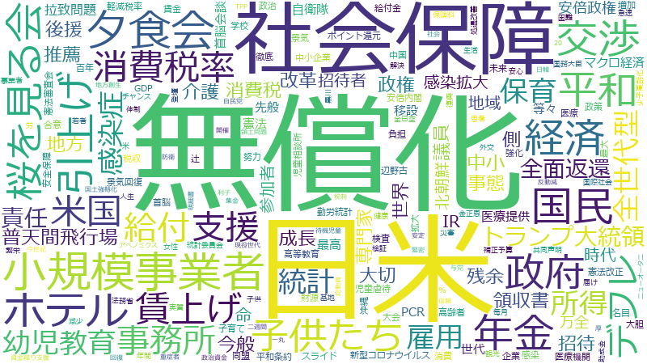

安倍晋三

支援 、政府 、国民 、感染症 、地域 、新型コロナウイルス 、側 、経済 、事業 、専門家 、雇用 、ホテル 、感染拡大 、感染 、今般 、体制 、拡大 、検査 、事業者 、措置 、協力 、困難 、給付 、企業 、事務所 、継続 、事態 、要請 、学校 、観点 、責任 、子ども 、小規模事業者 、生活 、整備 、給付金 、防止 、課題 、PCR 、医療機関 、最大 、補正予算 、全国 、世界 、努力 、健康 、国内 、政策 、負担 、ウィルス 、地方 、医療 、議員 、連携 、緊急事態 、規模 、開催 、強化 、中小 、法務省 、中心 、社会 、医療提供 、助成金 、中小企業 、総理大臣 、介護 、大切 、情報 、減少 、自治体 、基本的 、年間 、二週間 、経営 、維持 、命 、徹底 、迅速 、改革 、直接 、先般 、届け 、患者 、雇用調整 、予算 、職員 、変化 、大会 、年金 、都道府県 、参加者 、宣言 、感染者 、利子 、中国 、個別 、領収書 、処分 、持続化
支援 、感染症 、政府 、国民 、ホテル 、専門家 、新型コロナウイルス 、小規模事業者 、側 、雇用 、感染拡大 、事務所 、経済 、夕食会 、地域 、感染 、今般 、給付 、検査 、事業 、PCR 、領収書 、子ども 、医療提供 、医療機関 、給付金 、後援 、学校 、事業者 、体制 、拡大 、事態 、法務省 、中小 、困難 、継続 、補正予算 、要請 、措置 、届け 、参加者 、責任 、企業 、最大 、協力 、助成金 、年金 、介護 、二週間 、防止 、生活 、健康 、黒川 、大会 、緊急事態 、中小企業 、利子 、雇用調整 、全日空 、資金繰り支援 、医療 、重症者 、労 、終息 、対策本部 、努力 、ウィルス 、猶予 、世界 、大切 、観点 、ニューオータニ 、持続化 、先般 、整備 、議員 、患者 、瀬戸際 、地方 、国内 、全国 、緊急経済対策 、負担 、厚 、辻 、総理大臣 、開催 、明細書 、病床 、社会保障 、命 、政策 、課題 、甚大 、感染者 、急速 、休業 、改革 、検事総長 、イベント
支援
| 言及回数 | 689回 |
| 言及発言者数（参考人を含む） | 1362人 |
感染症
| 言及回数 | 550回 |
| 言及発言者数（参考人を含む） | 1067人 |
政府
| 言及回数 | 625回 |
| 言及発言者数（参考人を含む） | 1333人 |
国民
| 言及回数 | 581回 |
| 言及発言者数（参考人を含む） | 1234人 |
ホテル
| 言及回数 | 276回 |
| 言及発言者数（参考人を含む） | 386人 |
専門家
| 言及回数 | 324回 |
| 言及発言者数（参考人を含む） | 777人 |
新型コロナウイルス
| 言及回数 | 362回 |
| 言及発言者数（参考人を含む） | 1037人 |
小規模事業者
| 言及回数 | 187回 |
| 言及発言者数（参考人を含む） | 231人 |
側
| 言及回数 | 332回 |
| 言及発言者数（参考人を含む） | 957人 |
雇用
| 言及回数 | 286回 |
| 言及発言者数（参考人を含む） | 732人 |
感染拡大
| 言及回数 | 272回 |
| 言及発言者数（参考人を含む） | 690人 |
事務所
| 言及回数 | 215回 |
| 言及発言者数（参考人を含む） | 413人 |
経済
| 言及回数 | 326回 |
| 言及発言者数（参考人を含む） | 1035人 |
夕食会
| 言及回数 | 91回 |
| 言及発言者数（参考人を含む） | 16人 |
地域
| 言及回数 | 370回 |
| 言及発言者数（参考人を含む） | 1313人 |
感染
| 言及回数 | 261回 |
| 言及発言者数（参考人を含む） | 762人 |
今般
| 言及回数 | 255回 |
| 言及発言者数（参考人を含む） | 732人 |
給付
| 言及回数 | 219回 |
| 言及発言者数（参考人を含む） | 532人 |
検査
| 言及回数 | 248回 |
| 言及発言者数（参考人を含む） | 722人 |
事業
| 言及回数 | 324回 |
| 言及発言者数（参考人を含む） | 1247人 |
PCR
| 言及回数 | 173回 |
| 言及発言者数（参考人を含む） | 405人 |
領収書
| 言及回数 | 101回 |
| 言及発言者数（参考人を含む） | 74人 |
子ども
| 言及回数 | 195回 |
| 言及発言者数（参考人を含む） | 600人 |
医療提供
| 言及回数 | 137回 |
| 言及発言者数（参考人を含む） | 252人 |
医療機関
| 言及回数 | 173回 |
| 言及発言者数（参考人を含む） | 485人 |
給付金
| 言及回数 | 181回 |
| 言及発言者数（参考人を含む） | 546人 |
後援
| 言及回数 | 98回 |
| 言及発言者数（参考人を含む） | 82人 |
学校
| 言及回数 | 199回 |
| 言及発言者数（参考人を含む） | 680人 |
事業者
| 言及回数 | 238回 |
| 言及発言者数（参考人を含む） | 995人 |
体制
| 言及回数 | 253回 |
| 言及発言者数（参考人を含む） | 1152人 |
拡大
| 言及回数 | 251回 |
| 言及発言者数（参考人を含む） | 1141人 |
事態
| 言及回数 | 202回 |
| 言及発言者数（参考人を含む） | 814人 |
法務省
| 言及回数 | 139回 |
| 言及発言者数（参考人を含む） | 360人 |
中小
| 言及回数 | 139回 |
| 言及発言者数（参考人を含む） | 361人 |
困難
| 言及回数 | 221回 |
| 言及発言者数（参考人を含む） | 983人 |
継続
| 言及回数 | 204回 |
| 言及発言者数（参考人を含む） | 936人 |
補正予算
| 言及回数 | 171回 |
| 言及発言者数（参考人を含む） | 672人 |
要請
| 言及回数 | 202回 |
| 言及発言者数（参考人を含む） | 925人 |
措置
| 言及回数 | 237回 |
| 言及発言者数（参考人を含む） | 1206人 |
届け
| 言及回数 | 112回 |
| 言及発言者数（参考人を含む） | 239人 |
参加者
| 言及回数 | 103回 |
| 言及発言者数（参考人を含む） | 184人 |
責任
| 言及回数 | 196回 |
| 言及発言者数（参考人を含む） | 922人 |
企業
| 言及回数 | 216回 |
| 言及発言者数（参考人を含む） | 1113人 |
最大
| 言及回数 | 173回 |
| 言及発言者数（参考人を含む） | 765人 |
協力
| 言及回数 | 222回 |
| 言及発言者数（参考人を含む） | 1177人 |
助成金
| 言及回数 | 135回 |
| 言及発言者数（参考人を含む） | 450人 |
年金
| 言及回数 | 106回 |
| 言及発言者数（参考人を含む） | 256人 |
介護
| 言及回数 | 129回 |
| 言及発言者数（参考人を含む） | 460人 |
二週間
| 言及回数 | 118回 |
| 言及発言者数（参考人を含む） | 370人 |
防止
| 言及回数 | 176回 |
| 言及発言者数（参考人を含む） | 896人 |
生活
| 言及回数 | 185回 |
| 言及発言者数（参考人を含む） | 978人 |
健康
| 言及回数 | 156回 |
| 言及発言者数（参考人を含む） | 725人 |
黒川
| 言及回数 | 77回 |
| 言及発言者数（参考人を含む） | 103人 |
大会
| 言及回数 | 106回 |
| 言及発言者数（参考人を含む） | 309人 |
緊急事態
| 言及回数 | 141回 |
| 言及発言者数（参考人を含む） | 632人 |
中小企業
| 言及回数 | 134回 |
| 言及発言者数（参考人を含む） | 573人 |
利子
| 言及回数 | 102回 |
| 言及発言者数（参考人を含む） | 292人 |
雇用調整
| 言及回数 | 111回 |
| 言及発言者数（参考人を含む） | 372人 |
全日空
| 言及回数 | 56回 |
| 言及発言者数（参考人を含む） | 29人 |
資金繰り支援
| 言及回数 | 84回 |
| 言及発言者数（参考人を含む） | 173人 |
医療
| 言及回数 | 146回 |
| 言及発言者数（参考人を含む） | 758人 |
重症者
| 言及回数 | 84回 |
| 言及発言者数（参考人を含む） | 189人 |
労
| 言及回数 | 96回 |
| 言及発言者数（参考人を含む） | 291人 |
終息
| 言及回数 | 100回 |
| 言及発言者数（参考人を含む） | 331人 |
対策本部
| 言及回数 | 97回 |
| 言及発言者数（参考人を含む） | 306人 |
努力
| 言及回数 | 158回 |
| 言及発言者数（参考人を含む） | 926人 |
ウィルス
| 言及回数 | 154回 |
| 言及発言者数（参考人を含む） | 892人 |
猶予
| 言及回数 | 99回 |
| 言及発言者数（参考人を含む） | 334人 |
世界
| 言及回数 | 161回 |
| 言及発言者数（参考人を含む） | 969人 |
大切
| 言及回数 | 124回 |
| 言及発言者数（参考人を含む） | 589人 |
観点
| 言及回数 | 199回 |
| 言及発言者数（参考人を含む） | 1351人 |
ニューオータニ
| 言及回数 | 43回 |
| 言及発言者数（参考人を含む） | 10人 |
持続化
| 言及回数 | 100回 |
| 言及発言者数（参考人を含む） | 356人 |
先般
| 言及回数 | 112回 |
| 言及発言者数（参考人を含む） | 477人 |
整備
| 言及回数 | 183回 |
| 言及発言者数（参考人を含む） | 1215人 |
議員
| 言及回数 | 146回 |
| 言及発言者数（参考人を含む） | 852人 |
患者
| 言及回数 | 111回 |
| 言及発言者数（参考人を含む） | 483人 |
瀬戸際
| 言及回数 | 66回 |
| 言及発言者数（参考人を含む） | 96人 |
地方
| 言及回数 | 154回 |
| 言及発言者数（参考人を含む） | 950人 |
国内
| 言及回数 | 155回 |
| 言及発言者数（参考人を含む） | 961人 |
全国
| 言及回数 | 164回 |
| 言及発言者数（参考人を含む） | 1067人 |
緊急経済対策
| 言及回数 | 79回 |
| 言及発言者数（参考人を含む） | 196人 |
負担
| 言及回数 | 155回 |
| 言及発言者数（参考人を含む） | 1000人 |
厚
| 言及回数 | 89回 |
| 言及発言者数（参考人を含む） | 297人 |
辻
| 言及回数 | 59回 |
| 言及発言者数（参考人を含む） | 69人 |
総理大臣
| 言及回数 | 131回 |
| 言及発言者数（参考人を含む） | 763人 |
開催
| 言及回数 | 141回 |
| 言及発言者数（参考人を含む） | 880人 |
明細書
| 言及回数 | 53回 |
| 言及発言者数（参考人を含む） | 46人 |
病床
| 言及回数 | 88回 |
| 言及発言者数（参考人を含む） | 304人 |
社会保障
| 言及回数 | 94回 |
| 言及発言者数（参考人を含む） | 369人 |
命
| 言及回数 | 116回 |
| 言及発言者数（参考人を含む） | 615人 |
政策
| 言及回数 | 155回 |
| 言及発言者数（参考人を含む） | 1098人 |
課題
| 言及回数 | 174回 |
| 言及発言者数（参考人を含む） | 1308人 |
甚大
| 言及回数 | 84回 |
| 言及発言者数（参考人を含む） | 303人 |
感染者
| 言及回数 | 103回 |
| 言及発言者数（参考人を含む） | 518人 |
急速
| 言及回数 | 93回 |
| 言及発言者数（参考人を含む） | 412人 |
休業
| 言及回数 | 91回 |
| 言及発言者数（参考人を含む） | 398人 |
改革
| 言及回数 | 115回 |
| 言及発言者数（参考人を含む） | 692人 |
検事総長
| 言及回数 | 53回 |
| 言及発言者数（参考人を含む） | 65人 |
イベント
| 言及回数 | 97回 |
| 言及発言者数（参考人を含む） | 483人 |
支援
| 言及回数 | 689回 |
| 言及発言者数（参考人を含む） | 1362人 |
政府
| 言及回数 | 625回 |
| 言及発言者数（参考人を含む） | 1333人 |
国民
| 言及回数 | 581回 |
| 言及発言者数（参考人を含む） | 1234人 |
感染症
| 言及回数 | 550回 |
| 言及発言者数（参考人を含む） | 1067人 |
地域
| 言及回数 | 370回 |
| 言及発言者数（参考人を含む） | 1313人 |
新型コロナウイルス
| 言及回数 | 362回 |
| 言及発言者数（参考人を含む） | 1037人 |
側
| 言及回数 | 332回 |
| 言及発言者数（参考人を含む） | 957人 |
経済
| 言及回数 | 326回 |
| 言及発言者数（参考人を含む） | 1035人 |
事業
| 言及回数 | 324回 |
| 言及発言者数（参考人を含む） | 1247人 |
専門家
| 言及回数 | 324回 |
| 言及発言者数（参考人を含む） | 777人 |
雇用
| 言及回数 | 286回 |
| 言及発言者数（参考人を含む） | 732人 |
ホテル
| 言及回数 | 276回 |
| 言及発言者数（参考人を含む） | 386人 |
感染拡大
| 言及回数 | 272回 |
| 言及発言者数（参考人を含む） | 690人 |
感染
| 言及回数 | 261回 |
| 言及発言者数（参考人を含む） | 762人 |
今般
| 言及回数 | 255回 |
| 言及発言者数（参考人を含む） | 732人 |
体制
| 言及回数 | 253回 |
| 言及発言者数（参考人を含む） | 1152人 |
拡大
| 言及回数 | 251回 |
| 言及発言者数（参考人を含む） | 1141人 |
検査
| 言及回数 | 248回 |
| 言及発言者数（参考人を含む） | 722人 |
事業者
| 言及回数 | 238回 |
| 言及発言者数（参考人を含む） | 995人 |
措置
| 言及回数 | 237回 |
| 言及発言者数（参考人を含む） | 1206人 |
協力
| 言及回数 | 222回 |
| 言及発言者数（参考人を含む） | 1177人 |
困難
| 言及回数 | 221回 |
| 言及発言者数（参考人を含む） | 983人 |
給付
| 言及回数 | 219回 |
| 言及発言者数（参考人を含む） | 532人 |
企業
| 言及回数 | 216回 |
| 言及発言者数（参考人を含む） | 1113人 |
事務所
| 言及回数 | 215回 |
| 言及発言者数（参考人を含む） | 413人 |
継続
| 言及回数 | 204回 |
| 言及発言者数（参考人を含む） | 936人 |
事態
| 言及回数 | 202回 |
| 言及発言者数（参考人を含む） | 814人 |
要請
| 言及回数 | 202回 |
| 言及発言者数（参考人を含む） | 925人 |
学校
| 言及回数 | 199回 |
| 言及発言者数（参考人を含む） | 680人 |
観点
| 言及回数 | 199回 |
| 言及発言者数（参考人を含む） | 1351人 |
責任
| 言及回数 | 196回 |
| 言及発言者数（参考人を含む） | 922人 |
子ども
| 言及回数 | 195回 |
| 言及発言者数（参考人を含む） | 600人 |
小規模事業者
| 言及回数 | 187回 |
| 言及発言者数（参考人を含む） | 231人 |
生活
| 言及回数 | 185回 |
| 言及発言者数（参考人を含む） | 978人 |
整備
| 言及回数 | 183回 |
| 言及発言者数（参考人を含む） | 1215人 |
給付金
| 言及回数 | 181回 |
| 言及発言者数（参考人を含む） | 546人 |
防止
| 言及回数 | 176回 |
| 言及発言者数（参考人を含む） | 896人 |
課題
| 言及回数 | 174回 |
| 言及発言者数（参考人を含む） | 1308人 |
PCR
| 言及回数 | 173回 |
| 言及発言者数（参考人を含む） | 405人 |
医療機関
| 言及回数 | 173回 |
| 言及発言者数（参考人を含む） | 485人 |
最大
| 言及回数 | 173回 |
| 言及発言者数（参考人を含む） | 765人 |
補正予算
| 言及回数 | 171回 |
| 言及発言者数（参考人を含む） | 672人 |
全国
| 言及回数 | 164回 |
| 言及発言者数（参考人を含む） | 1067人 |
世界
| 言及回数 | 161回 |
| 言及発言者数（参考人を含む） | 969人 |
努力
| 言及回数 | 158回 |
| 言及発言者数（参考人を含む） | 926人 |
健康
| 言及回数 | 156回 |
| 言及発言者数（参考人を含む） | 725人 |
国内
| 言及回数 | 155回 |
| 言及発言者数（参考人を含む） | 961人 |
政策
| 言及回数 | 155回 |
| 言及発言者数（参考人を含む） | 1098人 |
負担
| 言及回数 | 155回 |
| 言及発言者数（参考人を含む） | 1000人 |
ウィルス
| 言及回数 | 154回 |
| 言及発言者数（参考人を含む） | 892人 |
地方
| 言及回数 | 154回 |
| 言及発言者数（参考人を含む） | 950人 |
医療
| 言及回数 | 146回 |
| 言及発言者数（参考人を含む） | 758人 |
議員
| 言及回数 | 146回 |
| 言及発言者数（参考人を含む） | 852人 |
連携
| 言及回数 | 144回 |
| 言及発言者数（参考人を含む） | 1262人 |
緊急事態
| 言及回数 | 141回 |
| 言及発言者数（参考人を含む） | 632人 |
規模
| 言及回数 | 141回 |
| 言及発言者数（参考人を含む） | 1043人 |
開催
| 言及回数 | 141回 |
| 言及発言者数（参考人を含む） | 880人 |
強化
| 言及回数 | 140回 |
| 言及発言者数（参考人を含む） | 1151人 |
中小
| 言及回数 | 139回 |
| 言及発言者数（参考人を含む） | 361人 |
法務省
| 言及回数 | 139回 |
| 言及発言者数（参考人を含む） | 360人 |
中心
| 言及回数 | 138回 |
| 言及発言者数（参考人を含む） | 1041人 |
社会
| 言及回数 | 138回 |
| 言及発言者数（参考人を含む） | 1144人 |
医療提供
| 言及回数 | 137回 |
| 言及発言者数（参考人を含む） | 252人 |
助成金
| 言及回数 | 135回 |
| 言及発言者数（参考人を含む） | 450人 |
中小企業
| 言及回数 | 134回 |
| 言及発言者数（参考人を含む） | 573人 |
総理大臣
| 言及回数 | 131回 |
| 言及発言者数（参考人を含む） | 763人 |
介護
| 言及回数 | 129回 |
| 言及発言者数（参考人を含む） | 460人 |
大切
| 言及回数 | 124回 |
| 言及発言者数（参考人を含む） | 589人 |
情報
| 言及回数 | 124回 |
| 言及発言者数（参考人を含む） | 1255人 |
減少
| 言及回数 | 123回 |
| 言及発言者数（参考人を含む） | 858人 |
自治体
| 言及回数 | 123回 |
| 言及発言者数（参考人を含む） | 949人 |
基本的
| 言及回数 | 122回 |
| 言及発言者数（参考人を含む） | 1076人 |
年間
| 言及回数 | 120回 |
| 言及発言者数（参考人を含む） | 1077人 |
二週間
| 言及回数 | 118回 |
| 言及発言者数（参考人を含む） | 370人 |
経営
| 言及回数 | 117回 |
| 言及発言者数（参考人を含む） | 790人 |
維持
| 言及回数 | 117回 |
| 言及発言者数（参考人を含む） | 985人 |
命
| 言及回数 | 116回 |
| 言及発言者数（参考人を含む） | 615人 |
徹底
| 言及回数 | 116回 |
| 言及発言者数（参考人を含む） | 808人 |
迅速
| 言及回数 | 116回 |
| 言及発言者数（参考人を含む） | 800人 |
改革
| 言及回数 | 115回 |
| 言及発言者数（参考人を含む） | 692人 |
直接
| 言及回数 | 115回 |
| 言及発言者数（参考人を含む） | 914人 |
先般
| 言及回数 | 112回 |
| 言及発言者数（参考人を含む） | 477人 |
届け
| 言及回数 | 112回 |
| 言及発言者数（参考人を含む） | 239人 |
患者
| 言及回数 | 111回 |
| 言及発言者数（参考人を含む） | 483人 |
雇用調整
| 言及回数 | 111回 |
| 言及発言者数（参考人を含む） | 372人 |
予算
| 言及回数 | 109回 |
| 言及発言者数（参考人を含む） | 1001人 |
職員
| 言及回数 | 107回 |
| 言及発言者数（参考人を含む） | 889人 |
変化
| 言及回数 | 106回 |
| 言及発言者数（参考人を含む） | 880人 |
大会
| 言及回数 | 106回 |
| 言及発言者数（参考人を含む） | 309人 |
年金
| 言及回数 | 106回 |
| 言及発言者数（参考人を含む） | 256人 |
都道府県
| 言及回数 | 106回 |
| 言及発言者数（参考人を含む） | 790人 |
参加者
| 言及回数 | 103回 |
| 言及発言者数（参考人を含む） | 184人 |
宣言
| 言及回数 | 103回 |
| 言及発言者数（参考人を含む） | 684人 |
感染者
| 言及回数 | 103回 |
| 言及発言者数（参考人を含む） | 518人 |
利子
| 言及回数 | 102回 |
| 言及発言者数（参考人を含む） | 292人 |
中国
| 言及回数 | 101回 |
| 言及発言者数（参考人を含む） | 779人 |
個別
| 言及回数 | 101回 |
| 言及発言者数（参考人を含む） | 945人 |
領収書
| 言及回数 | 101回 |
| 言及発言者数（参考人を含む） | 74人 |
処分
| 言及回数 | 100回 |
| 言及発言者数（参考人を含む） | 550人 |
持続化
| 言及回数 | 100回 |
| 言及発言者数（参考人を含む） | 356人 |